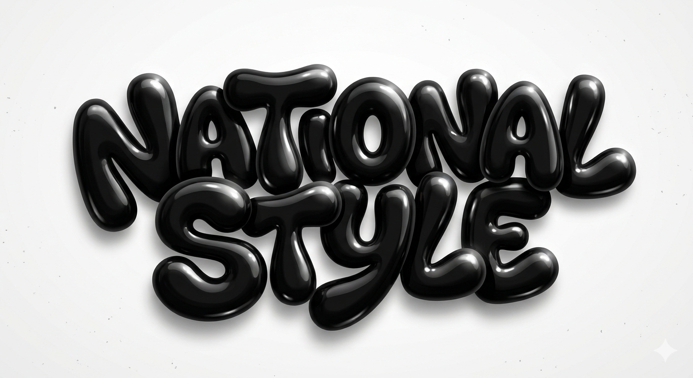

Sitio en mantenimiento
Nuestro sitio web se encuentra actualmente en mantenimiento.
Estamos trabajando para ofrecerte una mejor experiencia. ¡Volveremos muy pronto!

Sitio en mantenimiento
Estamos trabajando para ofrecerte una mejor experiencia. ¡Volveremos muy pronto!